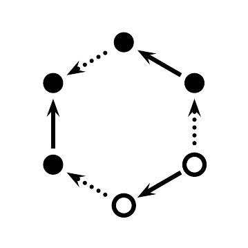

<h4>Arc invariant over \(\mathbb{F}_2\)</h4>
<p><span onclick=on('../KhT/examples/5_2-B/5_2-B_5/5_2-B_5_BNr7')></span>
<span onclick=on('../KhT/examples/5_2-B/5_2-B_5/5_2-B_5_BNr7_02')></span>
<span onclick=on('../KhT/examples/5_2-B/5_2-B_5/5_2-B_5_BNr7_03')></span>
<span onclick=on('../KhT/examples/5_2-B/5_2-B_5/5_2-B_5_BNr7_04')></span>
<span onclick=on('../KhT/examples/5_2-B/5_2-B_5/5_2-B_5_BNr7_05')></span>
<span onclick=on('../KhT/examples/5_2-B/5_2-B_5/5_2-B_5_BNr7_06')></span>
<span onclick=on('../KhT/examples/5_2-B/5_2-B_5/5_2-B_5_BNr7_07')></span>
<span onclick=on('../KhT/examples/5_2-B/5_2-B_5/5_2-B_5_BNr7_08')></span>
<span onclick=on('../KhT/examples/5_2-B/5_2-B_5/5_2-B_5_BNr7_09')></span>
<span onclick=on('../KhT/examples/5_2-B/5_2-B_5/5_2-B_5_BNr7_10')></span>

</p>
